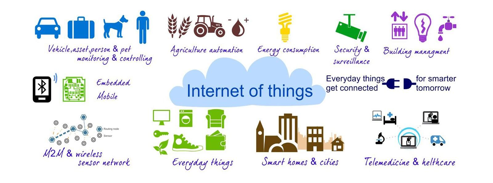

Tecnología de la información y de las telecomunicaciones.
Internet de las cosas: IoT
I
ANA COLOMBO ZAMBONIO, 1ºC
I
ANA COLOMBO ZAMBONIO, 1ºC
El internet de las cosas hace referencia a cualquier objeto que se conecta y comparte a la vez, información y datos a través de la red. Comprende un sistema de dispositivos de computación interrelacionados, máquinas, objetos e incluso seres vivos que tienen la capacidad de transferir datos a través de internet sin la necesidad de que intervenga el hombre. La IoT es ya una realidad con un potencial enorme para mejorar la calidad de vida y de los entornos profesionales.
Es un sistema de soluciones tecnológicas que permite que los objetos se conecten a Internet y entre sí. Consiste en sistemas ciberfísicos, computación integrada que usan la infraestructura de Internet y las aplicaciones y servicios que la utilizan.
Se trata de una nueva tecnología que conecta casi todo lo que hacemos. Facilita un ecosistema interconectado de dispositivos y máquinas, lo que permite a los usuarios controlar sus dispositivos desde cualquier lugar. Hay muchos beneficios de esta nueva tecnología, como mejorar la productividad y reducir el impacto ambiental.
Internet de las cosas (IoT) es un término amplio que se utiliza para la interconexión de objetos cotidianos con Internet o entre sí, contemplado en la informática. Estos dispositivos incluyen teléfonos inteligentes, automóviles, televisores, relojes, electrodomésticos y mucho más.
La próxima generación de ordenadores se construirá sobre plataformas como IoT que permiten la capacidad de computación sin hardware. Con esta nueva tecnología, será posible comunicarse con objetos sin ninguna intervención humana.
La IoT esta presente en la creación de oportunidades de negocio y modelos para empresas, y que estas puedan seguir creciendo con nuevos servicios.
Las tecnologías de internet de las cosas funcionan mediante la conexión de objetos a sensores.
Básicamente, cada objeto tiene una entrada IoT que, a su vez, replica la señal a la nube. Es decir, hay un servidor central de datos en la nube que procesa la información y la interpreta.
Hemos de señalar que, a veces, varios dispositivos y objetos pueden estar interconectados entre sí. De esta manera, se envía la información.
Utilizar datos proporciona a los negocios, industria o ciudad predecir fallos, reducir el tiempo de encontrar soluciones a posibles errores y aumentar la automatización.
La analítica avanzada es un conjunto integral de técnicas y métodos analíticos como Big Data, inteligencia artificial, Machine Learning, etc. LLevar a cabo un análisis de datos ayudará a controlar la producción, gestionar una posible inundación de datos y a impulsar el valor comercial de una marca.
Esta tecnología evoluciona constantemente y ha ido transformando la forma en que las personas viven y trabajan. Si bien todavía tiene algunas limitaciones, ofrece una variedad de beneficios y oportunidades para las empresas, pero también para las personas.
El Internet de las cosas promete revolucionar nuestras vidas , que van más allá de lo que podemos imaginar hoy. Desde hogares inteligentes hasta fábricas eficientes, IoT está cambiando mucho la forma en que las personas trabajan y viven, al tiempo que mejora la productividad y la rentabilidad a la vez. A pesar de estos avances, la seguridad cibernética sigue siendo una preocupación importante para aquellas personas que adoptan soluciones tecnológicas como estas.
Los dispositivos inteligentes han existido durante mucho tiempo, pero Internet de las cosas está cambiando de forma espectacular el modo en que se interactúa con la tecnología.
Internet de las cosas ha recibido mucha más prensa a medida que esta nueva tecnología se está abriendo camino lentamente en los hogares y negocios. Un dispositivo que está conectado a Internet puede considerarse un dispositivo de IoT.

IoT se refiere a una red creciente de objetos físicos que están conectados a Internet. Estos dispositivos inteligentes son cada vez más frecuentes en la vida cotidiana, ya que pueden ayudar a administrar el tiempo, energía, recursos, bienes, servicios y mucho más.
Por ejemplo, sirve para medir comportamiento y estadísticas. Si lo que quieres es mejorar la productividad, a nadie se le escapa que con IoT es más sencillo.

Con esta tecnología usada en los hogares o en las empresas, es posible saber de forma sencilla si uno de los dispositivos necesita arreglarse o cambiarlo. Esto permite poder planificar y evitar males mayores.

.jpg)
Sensores y actuadores: los sensores son dispositivos que pueden detectar cambios en el entorno, como la temperatura, la humedad, la luz, el movimiento o la presión. Los actuadores son dispositivos que pueden causar cambios físicos en el entorno, como abrir o cerrar una válvula o encender un motor. Estos dispositivos están en el corazón de IoT, ya que permiten que las máquinas y los dispositivos interactúen con el mundo físico. La automatización es posible cuando los sensores y actuadores trabajan para resolver problemas sin intervención humana.
Tecnologías de conectividad: Para transmitir datos de IoT desde sensores y actuadores a la nube, los dispositivos deben estar conectados a Internet. Hay varias tecnologías de conectividad utilizadas en IoT, incluyendo Wi-Fi, Bluetooth, celular, Zigbee y LoRaWAN.
Computación en la nube: La nube es donde se almacenan, procesan y analizan las grandes cantidades de datos generados por los dispositivos IoT. Las plataformas de computación en la nube proporcionan la infraestructura y las herramientas necesarias para almacenar y analizar estos datos, así como para crear e implementar aplicaciones IoT.
Análisis de big data: Para dar sentido a las grandes cantidades de datos generados por los dispositivos IoT, las empresas deben utilizar herramientas de análisis avanzadas para extraer información e identificar patrones. Estas herramientas pueden incluir algoritmos de aprendizaje automático, herramientas de visualización de datos y modelos de análisis predictivo.
Tecnologías de seguridad y privacidad: A medida que las implementaciones de IoT se generalizan, la seguridad y la privacidad de IoT se vuelven cada vez más importantes. Las tecnologías como el cifrado, los controles de acceso y los sistemas de detección de intrusiones se utilizan para proteger los dispositivos IoT y los datos que generan de las amenazas cibernéticas.


VIDEO--> La IoT en la medicina
En la industria de la salud, los dispositivos IoT se pueden usar para monitorizar a los pacientes de forma remota y recopilar datos en tiempo real sobre sus signos vitales, como la frecuencia cardíaca, la presión arterial y la saturación de oxígeno. Estos datos de los sensores pueden analizarse para detectar patrones e identificar posibles problemas de salud antes de que se agraven. Los dispositivos IoT también se pueden usar para rastrear equipos médicos, administrar el inventario y monitorizar el cumplimiento de los medicamentos.
Fabricación
Los dispositivos industriales de IoT se pueden utilizar en la fabricación para monitorizar el rendimiento de las máquinas, detectar fallos en los equipos y optimizar los procesos de producción. Por ejemplo, los sensores se pueden utilizar para controlar la temperatura y la humedad en una instalación de fabricación, asegurando que las condiciones sean óptimas para la producción de productos sensibles. Los dispositivos IoT también se pueden usar para rastrear el inventario, administrar las cadenas de suministro y monitorizar la calidad de los productos terminados. El IoT industrial es un nuevo espacio tecnológico tan expansivo, que a veces se lo denomina con su propia abreviatura: IIOT (IoT industrial).
Comercio minorista
En la industria minorista, los dispositivos IoT se pueden utilizar para rastrear el comportamiento de los clientes, monitorizar los niveles de inventario y optimizar la distribución de las tiendas. Por ejemplo, los sensores se pueden utilizar para rastrear el tráfico a pie en una tienda y analizar el comportamiento de los clientes, lo que permite a los minoristas optimizar la colocación de productos y mejorar la experiencia del cliente. Los dispositivos IoT también se pueden utilizar para monitorizar las cadenas de suministro, rastrear envíos y administrar los niveles de inventario.
Agricultura, Smart Agri
La agricultura inteligente representa un potencial real para un uso mas eficiente y preciso de los recursos limitados del campo. Incrementa la sostenibilidad y la productividad agrícola.
Los dispositivos IoT se pueden usar en la agricultura para monitorizar las condiciones del suelo, los patrones climáticos y el crecimiento de los cultivos. Por ejemplo, se pueden utilizar sensores para medir el contenido de humedad del suelo, asegurando que los cultivos se rieguen en el momento óptimo. Los dispositivos IoT también se pueden utilizar para monitorizar la salud del ganado, rastrear equipos y administrar cadenas de suministro. Los dispositivos de bajo consumo o que funcionan con energía solar a menudo se pueden utilizar con una supervisión mínima en ubicaciones remotas.
Transporte
En la industria del transporte, los dispositivos IoT se pueden utilizar para monitorizar el rendimiento del vehículo, optimizar rutas y rastrear envíos. Por ejemplo, los sensores pueden utilizarse para monitorizar la eficiencia del combustible de los coches conectados, reduciendo los costes de combustible y mejorando la sostenibilidad. Los dispositivos IoT también pueden utilizarse para monitorizar el estado de la carga, garantizando que llegue a su destino en óptimas condiciones.
Los sistemas inteligentes de transportes ofrecen soluciones que se basan en el diseño, implementación y despliegue de las siguientes soluciones IoT: seguimiento en tiempo real, rutas mas eficientes y reducir tiempo de inactividad. Estos sistemas contribuyen a gestionar de forma eficiente y segura el transporte.
Smart City
Una ciudad inteligente busca promover un desarrollo sostenible y eficiente en todos sus ámbitos, desde la movilidad, la gobernanza o la economía, hasta la manera de vivir de cada uno de los ciudadanos.
Una serie de variables definen la Smart City:
-Transporte eficiente
-Mayor transperencia gubernamental
-Participación ciudadana
-Protección medioambiental
-Funcionamiento inteligente y seguridad
Mejorar el entorno natural o urbano, facilitar procesos cotidianos, reducir gasto público y ofrecer información a tiempo real, son algunos de los beneficios que podemos enncontrar en una smart city.
Smart Port
Los puertos inteligentes nace de una necesaria modernización del sector. No por ello es uno de los activos logísticos más relevantes de algunos países. Produce beneficios varios:
-.Comerciales, a mejor gestión y operativa del puerto, mejor calidad de servicio para el cliente final
-Tecnógicos, la transformación digital juega un papel clave en las operaciones realizadas en el corazón del puerto.
-Institucionales, un equipo de gestión y agentes piden un cambio estructural en la operativa interna.
Riesgos de seguridad y privacidad: A medida que los dispositivos IoT se generalizan, la seguridad y la privacidad se vuelven cada vez más importantes. Muchos dispositivos IoT son vulnerables a hackers y otras amenazas cibernéticas, lo que puede poner en peligro la seguridad y privacidad de los datos confidenciales. Los dispositivos IoT también pueden recopilar grandes cantidades de datos personales, lo que plantea preocupaciones sobre la privacidad y la protección de datos.

Problemas de interoperabilidad: los dispositivos IoT de diferentes fabricantes suelen utilizar diferentes estándares y protocolos, lo que dificulta la realización de la comunicación llamada "máquina a máquina". Esto puede provocar problemas de interoperabilidad y crear silos de datos difíciles de integrar y analizar.

Sobrecarga de datos: Los dispositivos IoT generan grandes cantidades de datos, lo que puede abrumar a las empresas que no están preparadas para manejarlos. Analizar estos datos y extraer información significativa puede suponer un reto, especialmente para las empresas que carecen de las herramientas y la experiencia de análisis necesarias.

Costo y complejidad: La implementación de un sistema IoT puede ser costosa y compleja, requiriendo inversiones significativas en hardware, software e infraestructura. Gestionar y mantener un sistema IoT también puede ser difícil, lo que requiere habilidades y experiencia especializadas.

Desafíos regulatorios y legales: A medida que los dispositivos IoT se generalizan, surgen desafíos regulatorios y legales. Las empresas deben cumplir con diversas regulaciones de protección de datos, privacidad y ciberseguridad, que pueden variar de un país a otro.
Crecimiento: Se espera que el número de dispositivos IoT siga creciendo rápidamente; las estimaciones sugieren que habrá decenas de miles de millones de dispositivos IoT en uso en los próximos años. Este crecimiento se verá impulsado por una mayor adopción en todos los sectores, así como por el desarrollo de nuevos casos de uso y aplicaciones.
Computación perimetral: la computación perimetral se está volviendo cada vez más importante para IoT, ya que permite que los datos se procesen y analicen más cerca de la fuente de datos, en lugar de en un centro de datos centralizado. Esto puede mejorar los tiempos de respuesta, reducir la latencia y reducir la cantidad de datos que deben transferirse a través de redes IoT.

Inteligencia artificial y aprendizaje automático: la IA y el aprendizaje automático son cada vez más importantes para IoT, ya que se pueden utilizar para analizar grandes cantidades de datos generados por dispositivos IoT y extraer información significativa. Esto puede ayudar a las empresas a tomar decisiones más informadas y optimizar sus operaciones.

Blockchain: la tecnología Blockchain se está explorando como una forma de mejorar la seguridad y la privacidad en IoT. La cadena de bloques se puede utilizar para crear redes seguras y descentralizadas para dispositivos IoT, lo que puede minimizar las vulnerabilidades de seguridad de datos.
Sostenibilidad: la sostenibilidad se está convirtiendo en una consideración cada vez más importante para el IoT, ya que las empresas buscan formas de reducir su impacto medioambiental. El IoT se puede utilizar para optimizar el uso de energía, reducir los residuos y mejorar la sostenibilidad en una variedad de sectores.
https://www.bbva.com/es/sostenibilidad/internet-de-las-cosas-y-su-impacto-en-la-sostenibilidad/

El futuro de la IoT es apasionante, con muchos nuevos desarrollos e innovaciones en el horizonte, y los proveedores de dispositivos ofrecen precios atractivos, a medida que disminuye el costo de producción de los dispositivos de IoT. A medida que el número de dispositivos IoT continúa creciendo, las empresas deberán estar preparadas para adaptarse a las nuevas tecnologías y adoptar nuevos casos de uso y aplicaciones. Aquellos que puedan hacerlo estarán bien posicionados para cosechar los beneficios de esta tecnología transformadora.

Realiza las siguientes actividades:
1- Explica con tus palabras qué es el Internet de las cosas.
2-Pon algunos ejemplos de objetos que tengas en tu casa y que pertenezcan al Internet de las cosas.
3-Nombra tres dispositivos IoT interruptores y otros tres dispositivos IoT sensores.
4-Busca información en Internet sobre los botones inteligentes y describe su funcionamiento y utilidad.
5-¿Crees que los dispositivos IoT atentan contra la privacidad de las personas? Explica tu respuesta.
6-¿Qué tienen que ver los dispostivos IoT con el Big Data?
Aprendamos jugando
Juegos-de-tecnologia:aprende-sobre-iot-internet-de-las-cosas
Obra publicada con Licencia Creative Commons Reconocimiento Compartir igual 4.0